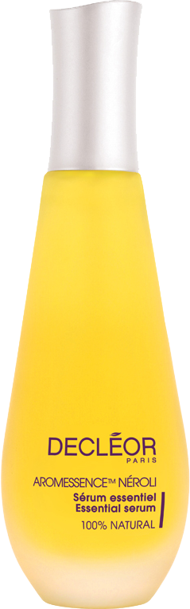
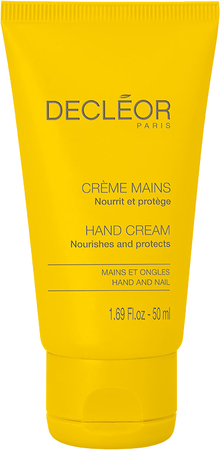

Aromessence Néroli Sérum-huile Hydratant
- Sérum Huile Hydratant Visage
- Peaux Déshydratées
- 
- 
- Hydrate la peau pendant 24 heures
- Affine le grain de peau
- Redonne de l’éclat au teint
- Adoucit la peau
* Test instrumental sur 11 femmes présentant une peau sèche, après 4h d’application de l’AROMESSENCE NÉROLI sérum-huile hydratant + HYDRA FLORAL Crème légère activatrice d´hydratation 24h